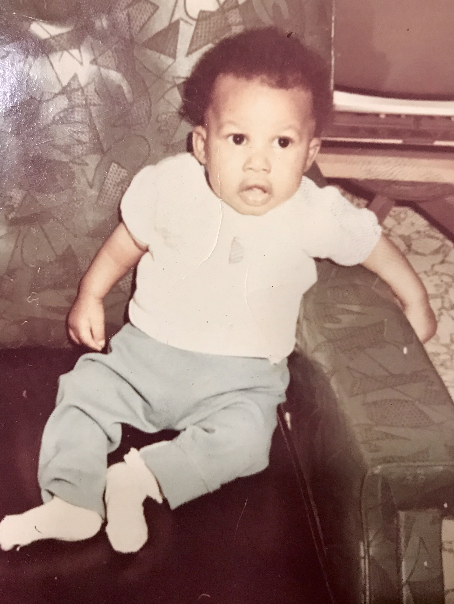
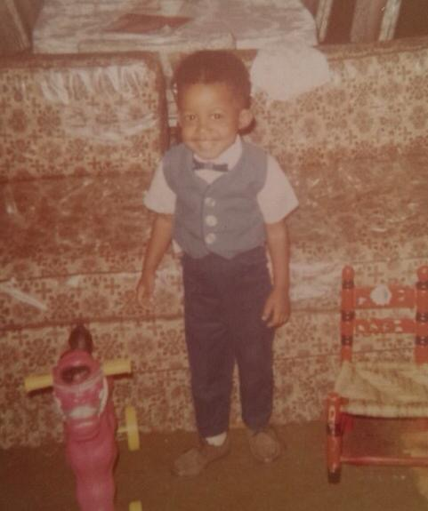
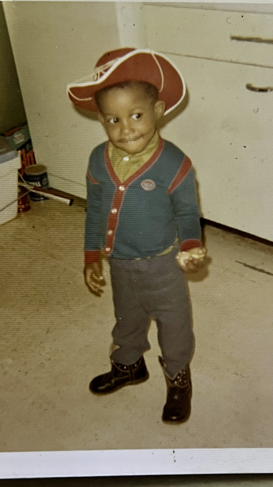
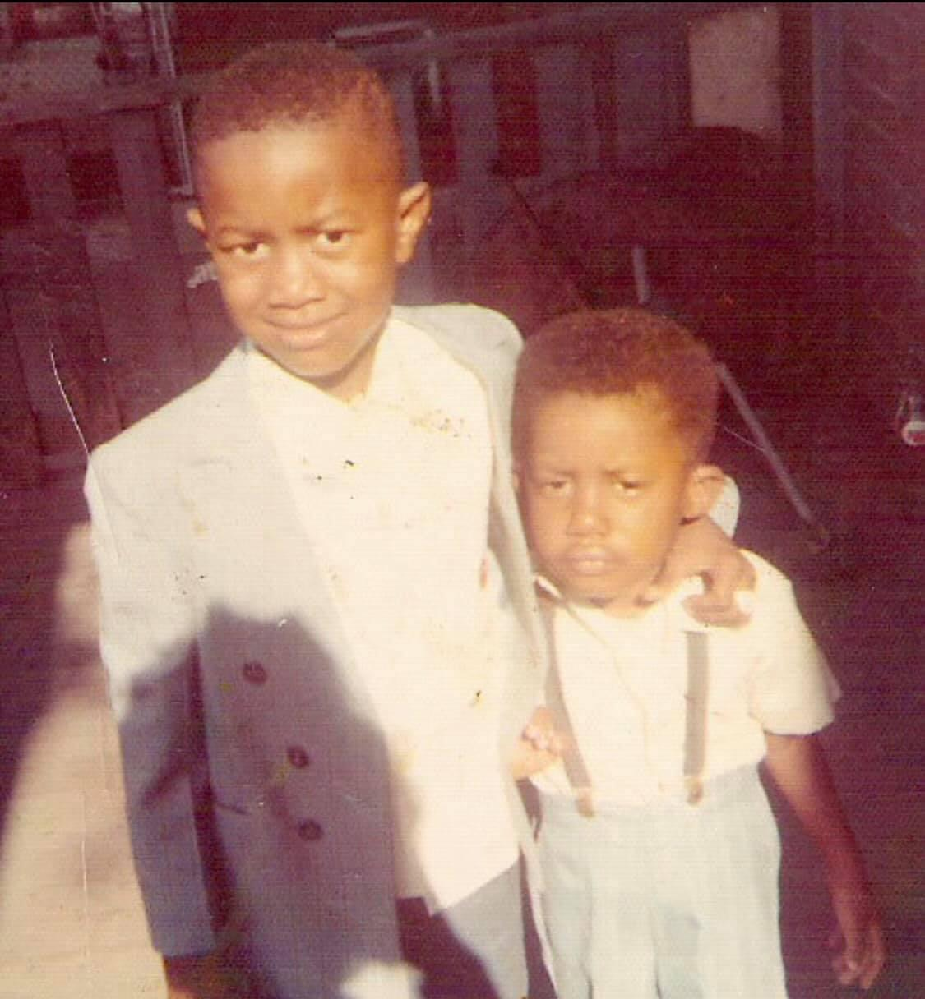
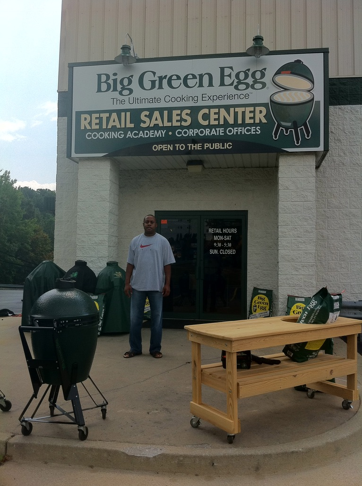
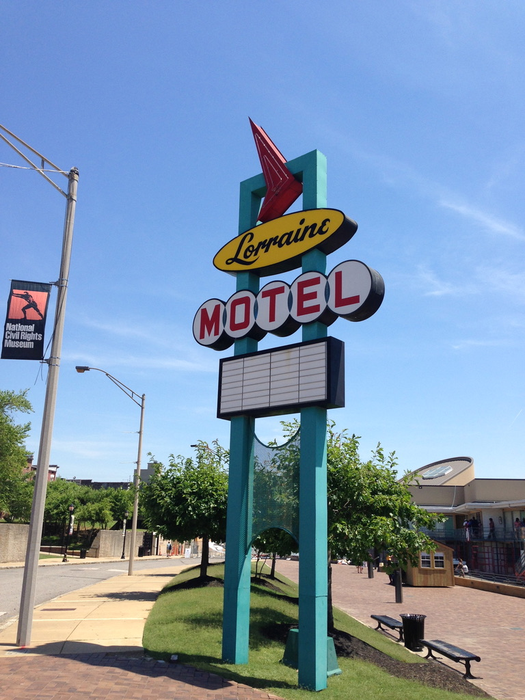
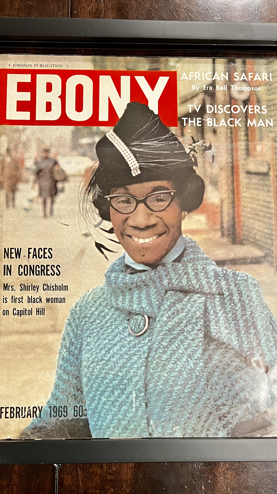
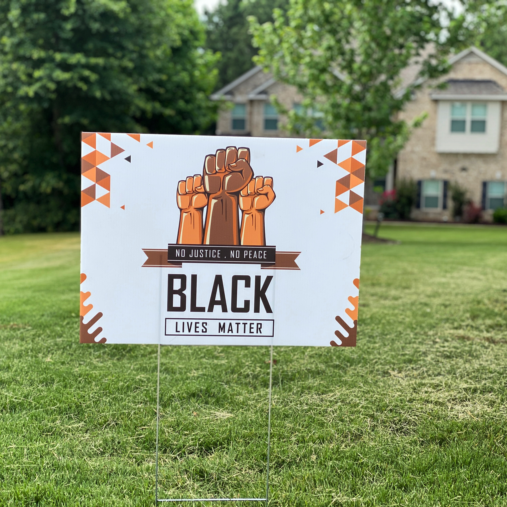
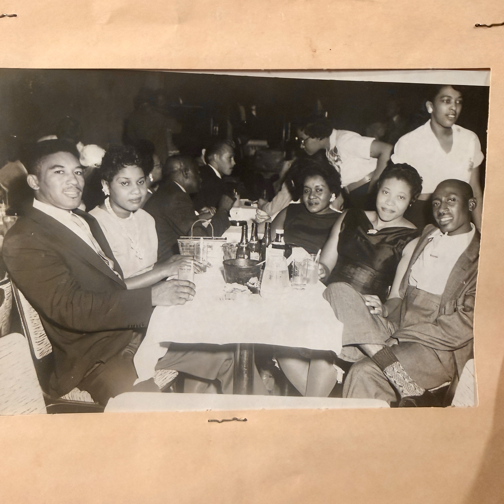

I'm Sean Cotton — software engineer, Army veteran, JSU alum, and proud member of Alpha Phi Alpha Fraternity, Inc. Chicago born, Mississippi bred. I built a life through discipline and service, and spent decades learning that the most important skill in any room is knowing how to connect with people.
My path to tech wasn't a straight line — and I think that's exactly what makes me good at it. After 10 years as a Military Police Officer, I spent 20 years mastering sales and relationship management. In 2017, I made the jump. I started by teaching HTML, CSS, and JavaScript to middle schoolers, broke into the tech industry, and never looked back.
Today I build enterprise software at SMC³. But when I'm not at the keyboard, you'll find me with my wife Dr. Wendy Cotton, spoiling Sasha, Alpha, Symba, and Nalah, parked in front of a smoker, or chasing the next great sunset from a cruise deck.





Me & my brother DarylI was born in Chicago, Illinois — but Mississippi made me. My family put roots down in Meridian, Mississippi, and that's where I came of age. Meridian shaped my sense of discipline early through Meridian High School's JROTC program, planting seeds that would eventually lead me to commission as an Army officer.
From Meridian, I headed to Jackson and enrolled at Jackson State University — one of the great HBCUs, and the place that truly changed my life. At JSU I found my brotherhood, crossing into Alpha Phi Alpha Fraternity, Inc. alongside 17 others. I earned my degree at JSU and went on to earn my MBA, building the academic foundation I still draw on today.

Commissioned as a Military Police Officer out of Jackson State University, I served 10 years and rose to Lieutenant. I led 33 soldiers with 24-hour security responsibility for a 72-acre facility, managing a $200K operating budget and $5M in property. The Army didn't just give me a career — it gave me a foundation.
After the Army, I spent two decades in sales and sales management — building relationships, leading teams, and learning how to solve real problems for real people. I worked with brands like Cox Automotive, Nestlé Waters, and CarMax, developing a people-first approach that still shapes every line of code I write today. Sales taught me something most engineers never learn: how to listen before you build.


In 2017 I made a decision that changed everything: I was going into tech. I started by teaching HTML, CSS, and JavaScript to middle schoolers at Ivy Preparatory Academy — and realized I loved building things. From there, I broke into the industry as a support engineer and kept climbing. Some pivots take courage. This one was just time.
Joined SMC³ as a Technical Support Analyst and worked my way to Software Engineer — through Integration Support, through agile teams, through thousands of hours of Java, Apache Camel, Spring Boot, and Oracle. Today I build enterprise integration software for the freight and logistics industry. The Army taught me to lead. Sales taught me to listen. Tech is where it all comes together.














Whether it's about software, the Army, JSU, Alpha, or the perfect smoke ring — I'm always down for a good conversation.